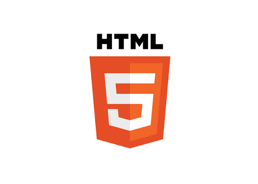
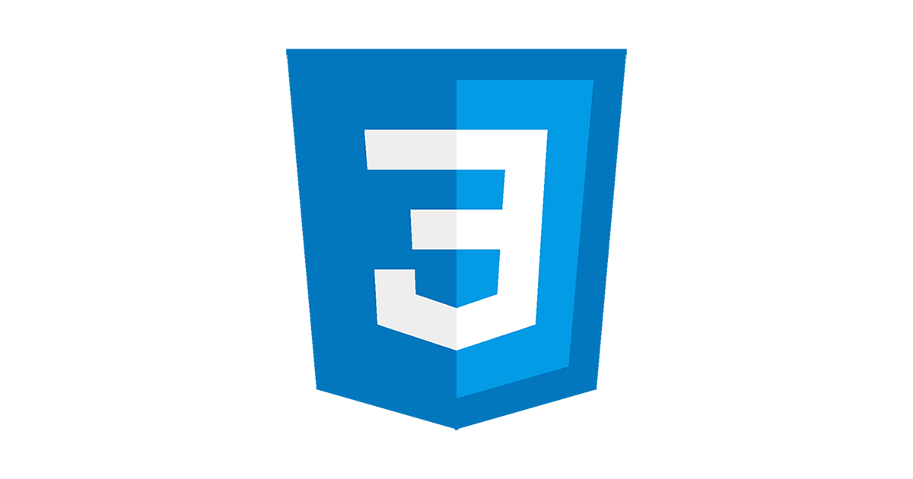
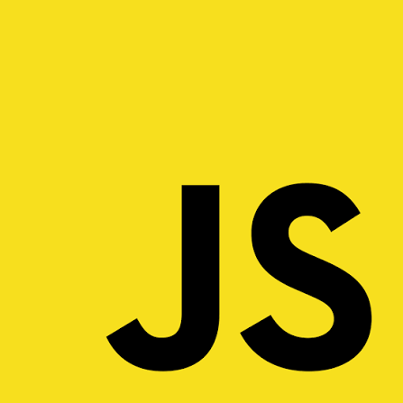
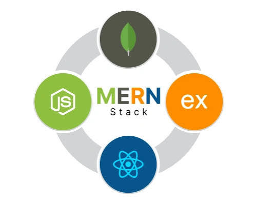

2026 - PRESENT
Bachelor of Computer Science
Miva Open University
I am developing my knowledge of computing, programming, and software development while strengthening my analytical and problem-solving skills.
Training models, uncovering patterns, and teaching data to tell its story.
Turning ideas into digital realities, one line of code at a time
2026 - PRESENT
I am developing my knowledge of computing, programming, and software development while strengthening my analytical and problem-solving skills.

HTML
CSS
JavaScript Python
Python
MERNPythonI enjoy creating things both on and off the screen. Here's a little glimpse into my world.
I enjoy building things with code, solving problems, and exploring how technology can be used to create intelligent solutions.
Outside of coding, I love working with my hands, exploring my creativity, and making things from scratch.